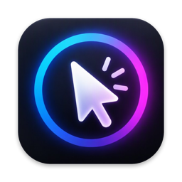

Mousy
Present with a spotlight, laser, drawing and keystrokes. A small menu bar app for macOS.
Requires macOS 13 or later · Apple silicon and Intel · All releases
What it does
Spotlight
Hold a key to dim the screen except for a soft circle around your pointer. Scroll to resize it.
Pointer halo
A ring or disc around the pointer, with your own border and fill colours.
Click effects
Aurora, water drop or particle ripples on every click, with separate left and right colours.
Keystrokes
Shows the shortcuts you press in an on-screen bar, so your audience can follow along.
Laser pointer
A glowing dot with a smooth trail that replaces the cursor.
Draw on screen
Pen, lines, arrows and shapes. Rough shapes snap clean, edges can be feathered, and drawings fade away on their own.
Install
- Download
Mousy.dmg, open it and drag Mousy to Applications. - The first time, macOS may say the developer is unidentified. Right-click Mousy, choose Open, then Open again.
- Allow Input Monitoring (for the keystroke display) and Accessibility (so right-click works while you draw) when asked.
Mousy checks for updates once a day and can install them for you. You can turn this off in About.